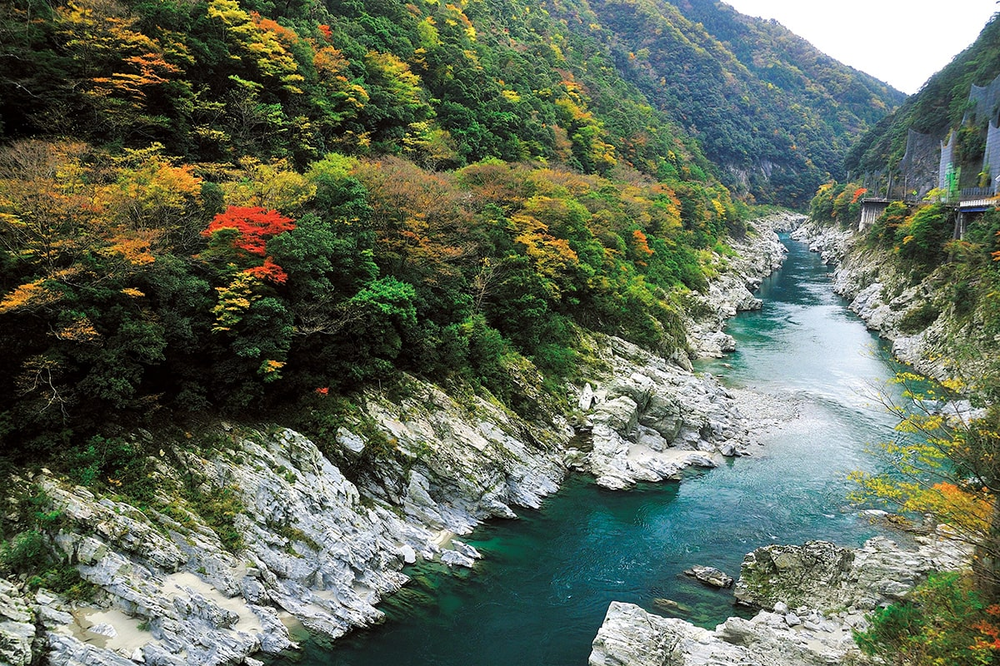
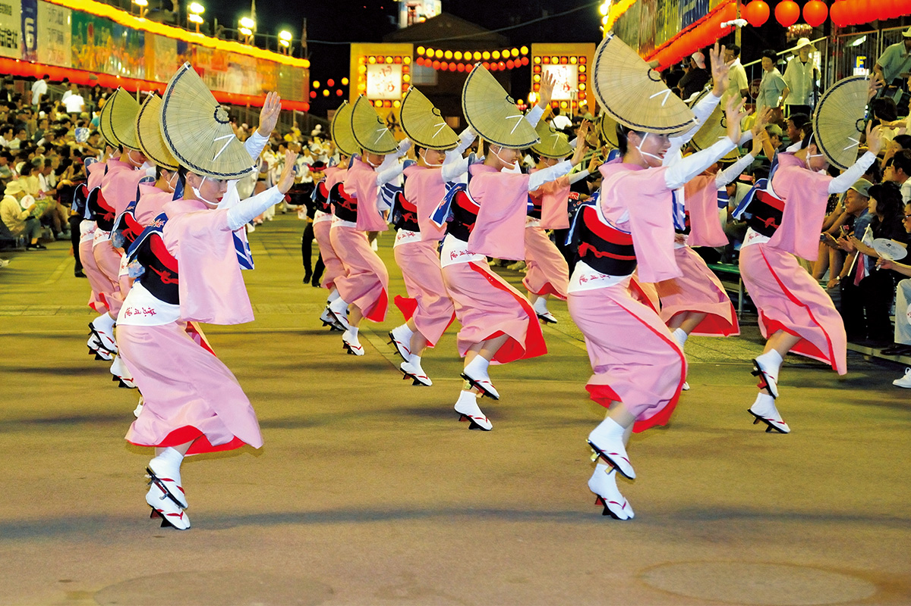
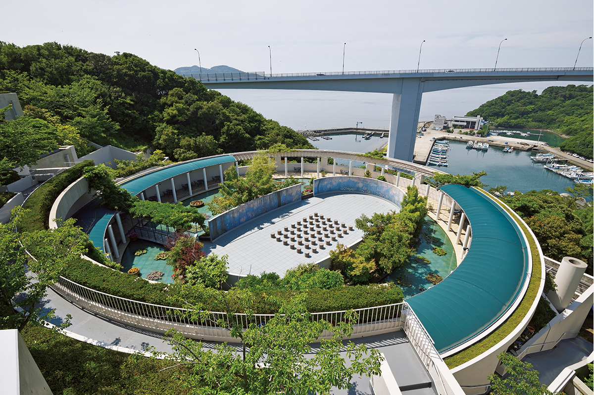
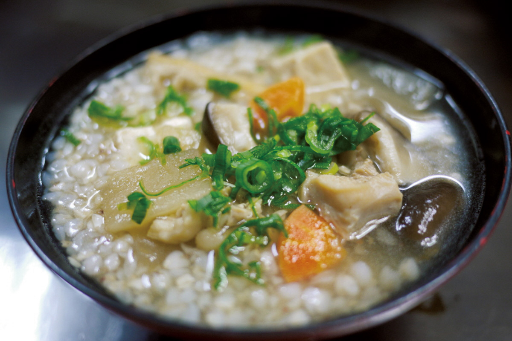
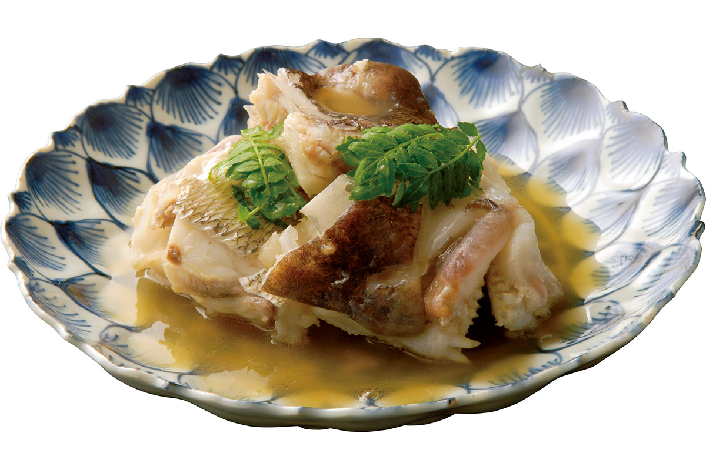
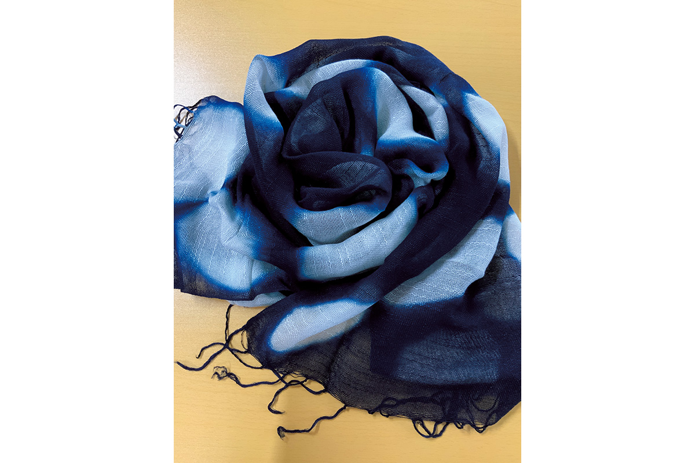
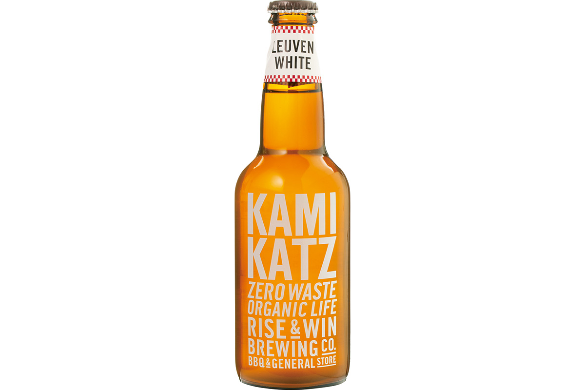
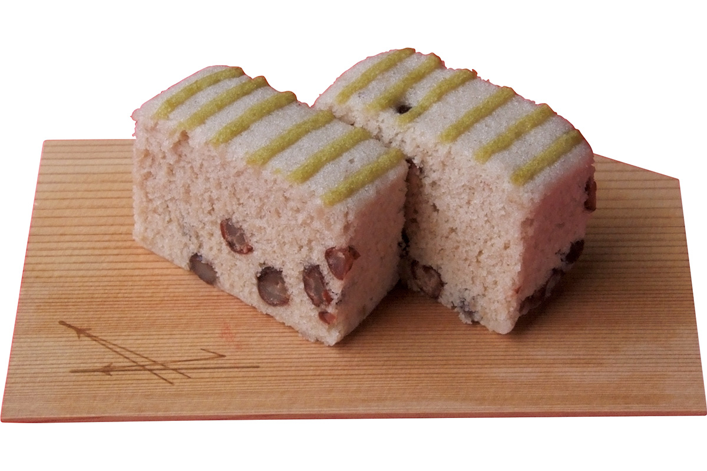
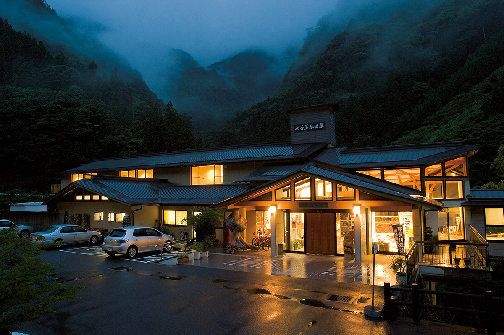

Префектура Токусима
Токусима: водовороты, танцы и зелёные горы

Воды реки в ущелье Обокэ бьются о серые скалы, а склоны уже тронула осень.
Водовороты больше двадцати метров в поперечнике, танец, который знает вся страна, цитрус судати и мост из лиан над ущельем. Рассказываем, за чем ехать в префектуру Токусима.
Карта: 45 мест из 9 статей · все статьи о Токусиме
Карта
Токусима на карте
45 мест из наших статей о Токусиме: Ава-одори, долина Ия, город на воде, индиго и сакэ долины Ёсино, Камикацу без отходов, мастерские и сладости. Нажмите на точку, чтобы открыть статью.
Пунктирный круг означает, что точка примерная: место находится в этом районе или на этом острове.
О префектуре
Земля, куда приезжает больше людей, чем здесь живёт
Ава-одори, самый известный праздник Токусимы, идёт больше четырёхсот лет: каждый год в середине августа сюда съезжается больше миллиона человек, а это больше, чем всё население префектуры.
Имя «Ава» в названии танца идёт от прежней области Ава, то есть «просовой страны»: здесь собирали много проса. Сама префектура получила имя в 1585 году, когда полководец Хатисука Иэмаса (1558–1639), основатель княжества Токусима, получил эти земли от Тоётоми Хидэёси (1537–1598), объединителя Японии конца XVI века, и переименовал своё владение в Токусиму.
Здешняя земля щедра на редкие вкусы: почти весь японский судати, зелёный цитрус, собирают именно здесь. Батат наруто-кинтоку идёт и в сладости, и в сётю, крепкий местный напиток из батата, а по весенней моркови префектура первая в стране. Над проливом Наруто, известным своими водоворотами, перекинут большой мост Онаруто, а через ущелье Ия тянется мост из лиан.
Что посмотреть
Одно из самых глухих мест Японии
Обокэ и Ия
Долины Обокэ и Ия называют одним из трёх заповедных, глухих уголков Японии. В ущелье Обокэ-Кобокэ между отвесных скал блестит вода цвета нефрита, а над долиной Ия один за другим поднимаются синие хребты.
- Телефон
- +81 120-404-344
- Справки
- туристическая ассоциация города Миёси
Что ещё посмотреть
- Водовороты Наруто, круговороты в проливе между островами, самые большие в стране
- Улица удацу в Вакимати, старые дома с высокими противопожарными щитами над крышами
- Храм Тайрюдзи, один из храмов паломничества по 88 храмам острова Сикоку
Праздники
Танец, которому больше четырёхсот лет
Ава-одори
Ава-одори это уличный танец: колонны танцоров идут под барабаны и песню, повторяя одни и те же движения. Этому танцу больше четырёхсот лет, и каждый год на него приезжает больше миллиона зрителей.

- Период
- середина августа
- Место
- город Токусима и окрестности
Другие праздники
- Биг-хина-мацури, праздник, где выставляют тысячи кукол хина
- Праздник светлячков, летние вечера у реки с тысячами светлячков
- Праздник морских черепах в Хиваса, праздник в честь черепах, которые откладывают здесь яйца
Музеи и архитектура
Дом, где собрали тысячу картин из Европы
Музей искусств Оцука
В этом музее больше тысячи знаменитых европейских полотен, и каждое воспроизведено в натуральную величину на керамических плитах. Здесь можно пройти по залам, как будто по музеям Европы, не выезжая из Японии.

- Адрес
- 65-1 Fukuike, Tosadomariura, Naruto-cho, Naruto, Tokushima
- Телефон
- +81 88-687-3737
- Сайт
- o-museum.or.jp
Что ещё посмотреть
- Зал Ава-одори, музей танца в центре города
- Усадьба Ава-Дзюробэй, дом кукольного театра, где выступают с марионетками
- Музей современного искусства Токусимы, городское собрание искусства XX века
Местная кухня
Каша из гречихи, которая хрустит на зубах
Собамэ-дзосуй
В этой густой похлёбке вместо риса зёрна гречихи соба. Их варят вместе с овощами, курицей и горными травами, и зёрна приятно похрустывают.

Что ещё попробовать
- Тараи-удон, лапша, которую подают в деревянном тазу
- Имо-моти, лепёшки из батата
- Дэко-маваси, закуска из конняку, плотного желе из растения конняку, на палочках с мисо
Где поесть
Ресторан, где ужин придумывают заново
Токусима Аояги
Ресторан держит местный повар, один из самых уважаемых мастеров японской кухни. Он готовит кайсэки, то есть ужин из небольших перемен, из местных продуктов и каждый раз добавляет что-то своё.

- Адрес
- 2-10-3 Daido, Tokushima
- Телефон
- +81 88-622-3405
- Время работы
- днём и вечером только по предварительной записи
- Выходные
- нерегулярные
- Сайт
- aoyagi-group.jp
Ремёсла
Синий цвет, который зовут «японский синий»
Шарфы из натурального индиго
Краситель индиго делают из растения, которое на Токусиме выращивают с середины эпохи Эдо, то есть с XVIII века. Натуральное индиго даёт глубокий ровный оттенок, и такой синий здесь зовут «японский синий».

- Телефон
- +81 88-692-8584
- Сайт
- yanokozyo.com
Что привезти
Что везут из Токусимы: пиво без отходов и олень из теста
Пиво KAMIKATZ
В городке Камикацу варят крафтовое пиво KAMIKATZ, а на этикетке обещают жизнь без отходов. Бутылка стоит 660 иен.

- Телефон
- +81 88-666-3339
- Сайт
- kamikatz.jp
Сладость Саосика
Саосика делают на пару: название так и переводится, «молодой олень», и олень стал знаком этой сладости. Тесто получается очень гладким, а вкус сладким, но не приторным. Одно изделие стоит 2060 иен.

- Телефон
- +81 88-623-1118
- Сайт
- saoshika.co.jp
Где остановиться
Один дом в горах, куда едут за дичью
Сикибидани-онсэн
До этого онсэна, то есть гостиницы с горячим источником, два часа на машине от станции Токусима, и стоит он один в горах. Здесь подают свежее мясо оленя, добытого в горах Цуруги на юге префектуры, и зовут его «Ава-дзибиэ», то есть местная дичь.

- Адрес
- 3-3 Natsugiri, Yokotani, Naka-cho, Naka-gun, Tokushima
- Телефон
- +81 884-65-2116
- Комнат
- 9, из них 7 японских номеров на втором этаже с видом
- Цена
- от 10 000 иен за ночь с двумя приёмами пищи, налог не включён, купальный сбор включён
Местный диалект
Как здесь говорят «очень вкусно»
- готцуй ойсии ндзёочень вкусно
- абабайслепит глаза, ярко
- цумаэрупоставить на место, вернуть как было
- сэкойтяжело, тесно
Рекорды
В чём Токусима первая
- №1 судати: первое место по урожаю
- №2 индиго: первое место по производству
- №3 водовороты Наруто: самые большие в мире
Вопросы и ответы
Что ещё спрашивают о Токусиме
Какую керамику делают на «спящем гончарном круге»?
Отани-яки. Этой посуде больше двухсот лет, и здесь делают большие вещи, например чаны для окрашивания индиго. Круг вращают не руками: помощник ложится под верстак и толкает его ногами. Такой приём зовут «нэрокуро», и он есть только здесь.
Какой местный овощ по вкусу напоминает каштан?
Наруто-кинтоку, батат из окрестностей Наруто. Он растёт на песке с морскими минералами, где тепло и мало дождя. За золотистый цвет такой батат зовут «кинтоку», как сладкую пасту из бобов.
Справочник
Токусима в цифрах
| Центр префектуры | город Токусима |
| Города и посёлки | 8 городов, 15 посёлков, 1 деревня |
| Площадь | 4147 кв. км |
| Население | 740 тысяч человек |
| Плотность населения | 177,5 человека на кв. км |
| Туристов за год | 6,5 миллиона |
| Дерево префектуры | восковница |
| Цветок префектуры | судати |
| Птица префектуры | белая цапля |
| Средняя температура | +17,1 |
| Максимум | +33,1 |
| Минимум | +1,5 |
| Осадки | 1760 мм |
| Ясных дней | 35 |
| Дождливых дней | 106 |
| Снежных дней | 12 |
| Онсэнов | 26 |
| Гостиниц и рёканов | 607 |
| Музеев искусств | 4 |
| Музеев | 28 |
| Митиноэки, придорожных станций | 16 |
| Важных культурных ценностей | 48 |
| Исторических мест | 12 |
| Природных памятников | 25 |
| Национальные парки | Внутреннее море Сэто, Мурото-Анан, Цуруги, всего 3 |
Природные памятники
- Пятнистая саламандра касуми, редкая амфибия, которая живёт только в чистой воде
- Земляные столбы Ава, высокие столбы, которые вода выточила в мягкой породе
- Место обитания крупных угрей у реки Босэн, участок реки, где держатся самые большие угри
- Заросли рододендронов Фунакубо, склон, который весной покрывается розовым
Наши статьи